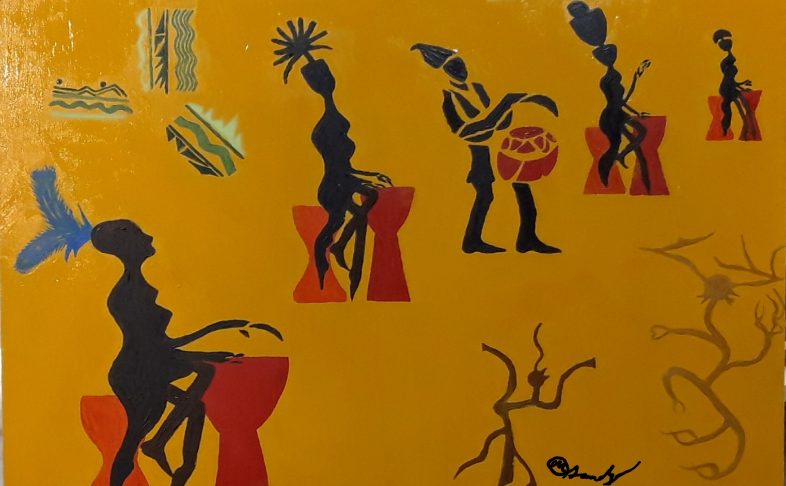

Actualités
Pour clôturer notre deuxième semestre d'existence, on donne un concert le jeudi 6 février 2025 dans l'espace Accueil de l'Atelier des Artistes en Exil à partir de 20h ! Venez découvrir notre répertoire et les fruits de notre travail des 13 dernières séances !
Le premier semestre s'est achevé en juin 2024 avec un concert à l'Atelier des Artistes en Exil à l'occasion de la Fête de la Musique ! Vous pouvez revivre ce moment en regardant cette vidéo :
Le premier semestre a inspiré à l'un de nos membres talentueux, Mathieu Janody, la peinture de ce tableau, dont le titre est Percussionnistes et danseuses congolaises.
